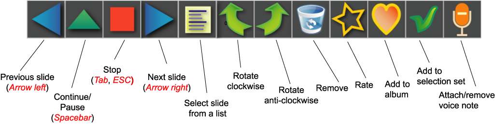

Slide show player
The purpose of the slide show facility is the convenient assessment of
images, not the creation of professional slide shows. Therefore, the
slide show player provides means for changing image properties while
playing. Simply move the mouse over the image to do so. The player will
immediately go into the manual mode and the control
panel will pop up.
Now, click one of the buttons. If you do not press a button, the
control panel will vanish after a while. The player, however, will remain
in the manual mode until a further command is given.
The following buttons are
available:
- Previous slide. A short
click jumps to the previous slide. A longer
press opens a slide selection list. The viewer will remain in
manual mode.
- Play. Continue autoplay.
- Stop. End slide show.
- Next slide. A short
click jumps to the next slide. A longer
press opens a slide selection list.The viewer will remain in
manual mode.
- Selection list. The new slide
to be viewed can be selected freely from the displayed list.
- Rotate clockwise. The
viewer will remain in manual mode.
- Rotate anti-clockwise. The
viewer will remain in manual mode.
- Rate or
Delete. The viewer will
remain in manual mode.
- Add
to albums. The
viewer will remain in manual mode.
Tip: Create an album named TODO. During a slideshow add
images that need work to this album.
- Add
to selection set or remove
from selection set.
When images are added to the selection set during a slide show, these
images will be selected in the current gallery after the slide show
has
ended.
- Attach/remove
voice note.
This will open a dialog where you can record a voice note for the
current slide, attach an existing audio file as voice note, or remove
an existing voice note.
Alternatively, the following keys can be used.
- Tab or Esc: End slide show.
- Arrow left:
Previous slide. The viewer will swith to manual mode.
- Arrow right. Next
slide. The viewer will swith to manual mode.
- Arrow up Opens
selection list.
- Ctrl + Arrow
left or R: Rotate
anti-clockwise.
- Ctrl +
Arrow
right or r:
Rotate clockwise.
- Space bar: Toggle between manual mode and autoplay.
- 0, 1, 2, 3, 4,
5: Rate the image. This keys make it possible to rate
images on the fly.
- a: Add to albums
- r: Rotate image clockwise
- R: Rotate image counter-clockwise
- s: Adds image to selection
- S: Removes image from selection
- v or V: Attach/remove voice note
- DEL: Shows the deletion dialog.
- F1: Shows a short help text.
- F2: Shows the metadata.
